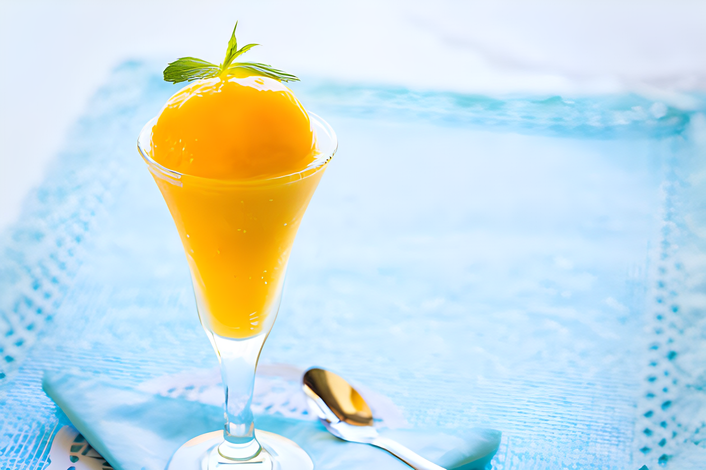

Certainly! Making mango sorbet is a refreshing and dairy-free option.
Ingredients
3 cups ripe mango chunks (about 3 large mangoes)
1/2 cup granulated sugar (adjust based on sweetness preference)
1/4 cup water
1 tablespoon freshly squeezed lime or lemon juice (optional)

Instructions
1.Prepare the Mango
Peel and dice the ripe mangoes, removing the pit.
2.Make Simple Syrup
In a small saucepan, combine the granulated sugar and water.
Heat over medium heat, stirring until the sugar completely dissolves.
Allow the simple syrup to cool.
3.Blend Mango Puree
In a blender or food processor, blend the mango chunks until smooth.
4.Combine Ingredients
In a mixing bowl, combine the mango puree with the cooled simple syrup.
Add lime or lemon juice if desired for a hint of acidity and brightness.
5.Chill the Mixture
Cover the bowl and refrigerate the mixture for at least 2-3 hours to ensure it's well-chilled.
6.Churn the Sorbet
Pour the chilled mango mixture into an ice cream maker.
Churn the mixture according to the manufacturer's instructions until it reaches a sorbet consistency.
7.Transfer and Freeze
Transfer the churned mango sorbet into a lidded container, spreading it evenly.
Freeze the sorbet for an additional 2-4 hours, or until it's firm.
8.Serve
Scoop out the mango sorbet and enjoy!
This mango sorbet is a delightful and fruity treat, 😋perfect for hot days. You can garnish it with mint
leaves or a few mango slices for an extra touch.